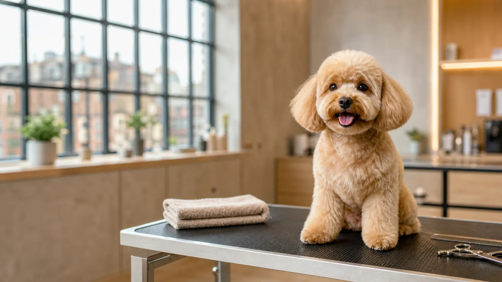

Let's get your dog booked in.
A friendly grooming record card that captures the details owners usually send across messy messages.
Dog name: Milo
1stamped
Coat, size & service
Small, medium, large; tidy-up, full groom, puppy intro, or special care notes.
2stamped
Temperament notes
Nervous, senior, first visit, matting concerns, sensitive areas, and drop-off reminders.
3ready
Preferred booking window
Collects times and sends a clean summary to the team before they reply.
Rebooking reminder
Friendly follow-up after the groom.
Review request
Happy customer? Send Google review link.